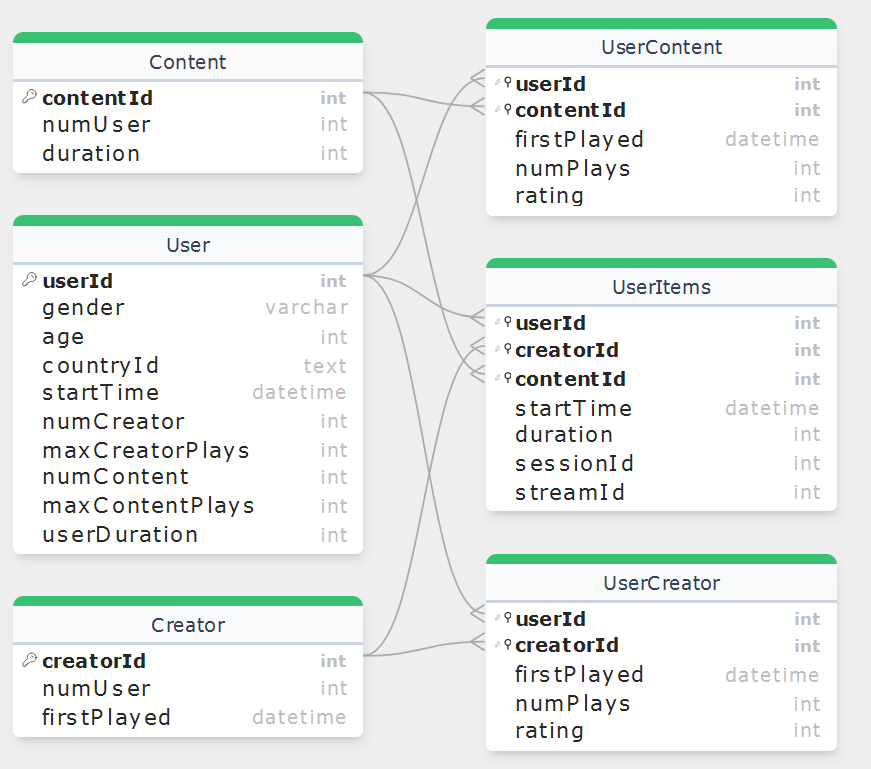

The purpose of this assessment is to give students the opportunity to show what they have learned in the module by discovering knowledge in databases (classical data mining). In this assessment, students are asked to perform clustering and association analysis and to generate recommendations.
Data was collected from real users in relation to their streaming activity. The raw data was shared with the ML community. The basic idea is that
Relatively little contextual data was provided, mainly to protect user privacy.
We improved the dataset as follows. We
Different extracts from this dataset will be used to perform each of the three tasks.
Specific tasks are set, relating to how the analysis is set up, how to configure the machine learning techniques, and how to interpret and/or improve the results.
A detailed specification has been prepared in the format of a python notebook for each task.
This includes advice on how to obtain the data and how to perform some initial processing so that the data is ready for the next stage of processing.
Clustering, association analysis and recommendation tasks are specified and students are asked to investigate the data using these approaches. If a student wishes to add extra forms of analysis which prove enlightening, bonus marks might be added, but the core tasks should be attempted at the very least.
For more details, please refer to the CA4-Clus_spec.ipynb,
CA4-ARM_spec.ipynb and CA4-RS_spec.ipynb notebooks included with the
moodle activity.
Students should submit 3 notebooks:
studentId-StudentName-CA4_Clus.ipynbstudentId-StudentName-CA4_ARM.ipynbstudentId-StudentName-CA4_RS.ipynbwhere studentId is replaced with their 8-digit student number and
StudentName would be something like 'JohnOShea'. Students should also submit
any supporting files, so that their notebooks can be run. Students should NOT
upload the data files provided with the assignment, unless their notebook
assumes the data is placed somewhere other than in a data/ subfolder.
Students are advised to refer to each specification notebook, make their own copy (using the naming convention) and familiarise themslves with the data before attempting each subtask.
Students are asked to submit three Jupyter notebooks, one for each main task of the assessment, together with any supporting resources needed to run the analysis. If you use any additional python packages, please indicate where they can be found too.
Students are reminded to use the markdown cells in their notebooks to explain their reasoning, discuss outputs and report on the progress of their data investigation. Students are also advised to use both tabular and plotted output to present their work. Each notebook should read like a technical report, with all findings supported by evidence.
A common pattern in Jupyter notebooks is to present each stage of the analysis as follows
Assignment attempts should be uploaded via the Moodle submission page. Students can upload as often as they wish, but should remember to submit the version they wish us to grade.
The deadline for submission is Wednesday 7 May 2025 at 21:00.
| id | Criterion | Marks |
|---|---|---|
| 1 | CLUS Perform EDA on Users and answer questions | 10 |
| 2 | CLUS Prepare and encode the data | 10 |
| 3 | CLUS Apply kmeans, check k and interpret the clusters | 15 |
| 4 | ARM Perform EDA on UserItems and answer questions | 10 |
| 5 | ARM Pivot transactions to horizontal format and derive frequent itemsets | 10 |
| 6 | ARM Derive association rules and add rule length | 10 |
| 7 | ARM Choose between similar association rules that differ by antecedent membership | 5 |
| 8 | RS Perform EDA on UserCreator and answer questions | 10 |
| 9 | RS Investigate relationships between ratings and streaming activity | 10 |
| 10 | RS Benchmark recommendation algorithms in terms of their error and timings | 10 |
This assignment is worth 25% of your overall grade for this module.
The data is presented in 6 files, which are related to each other as shown in the following Entity-Relationship Diagram (ERD).

Referring to the ERD above,
numUser is the number of users associated with this contentId or
creatorIdfirstPlayed is the timestamp that any content from that creatorId was
playednumPlays is the number of times a user played that contentId, or any
content from that creatorIdrating takes a value between 1 and 5, where higher rating values indicate
more user satisfaction with that contentId or that creatorId.UserItems table is the most detailed table, and has been annotated with
sessionId and streamId.session, with the
order the contentIds are consumed indicated by the streamId in that
sessionId.This task uses the User "table", and the goal is to cluster the users based on
their similarity. Each userId has a small number of demographic features
(gender and countryId) and a larger number of behavioural attributes. The
users were chosen based on their compatible streaming behaviour, but there
is still a lot of variability.
This task uses the UserItems "table", which is interpreted as a series of
transactions. The transaction is referenced using a combination of userId
and sessionId, and the basket of items per transaction is indicated by either
the creatorIds (equivalent to brands) or the contentIds (equivalent to
purchased items) for that userId,sessionId combination.
This task uses the UserCreator "table", which indicates how each userId has
rated the content from each of the creatorIds that they have streamed and
consumed. The data is thus in a format suitable for collaborative filtering.
Other data is provided in support of your EDA activities, to help your understanding.